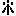

Trick: In trick, or tricking, is an expression used when the arms instead of being blazoned in the ordinary way are roughly sketched in, and the tinctures added, and other notes(such e.g. as the repetition of the charge) by abbreviations or signs. The letters usually adopted by the heralds, many of whose note-books we possess, compiled during their visitations, are o for or, a for argent, b for azure(instead of az. which might be mistaken for ar.); g for gules; v for vert; s for sable; p for purpure; er for ermine(rarely;  being more often used); ppr for proper. The accompanying figures are taken from a copy made by Nicholas Charles in 1606[Harl. MS. No. 6589, fol. 5 and fol. 6 verso] of a Roll of Arms temp. Ed. I. Besides copying the blazon, he has also here and there added the coats of arms in trick. It will at once be seen how simple the system is. At the same time in some of the visitations of heralds the arms are very difficult to decipher, and the animals and birds are generally drawn very roughly.
Andreio de SAKEVILLE, quarterly or and G., a bend verry.
Michaell de POYNINGS, barry 6 or and vert, a bend gules.